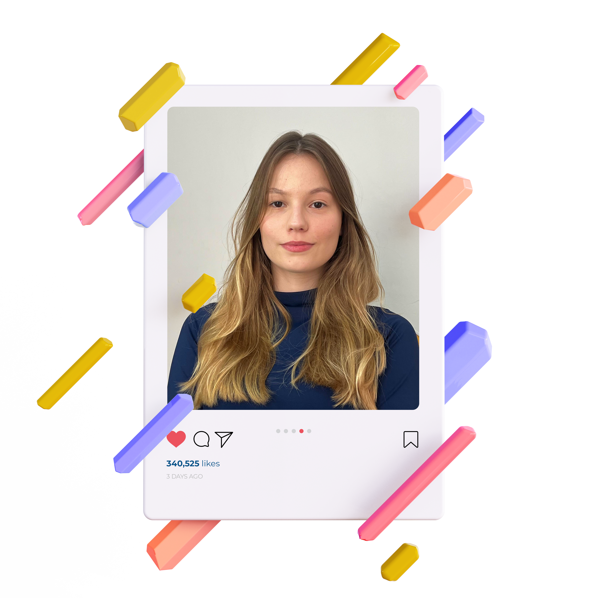
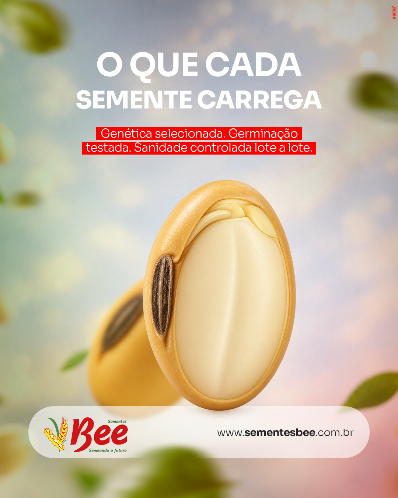
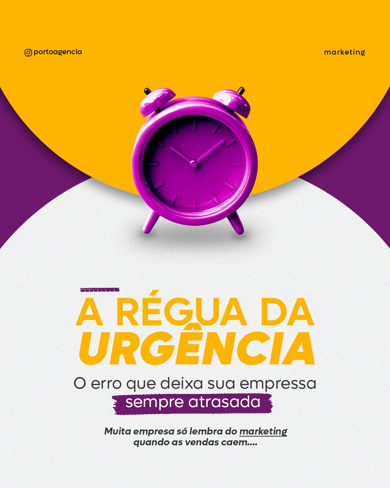
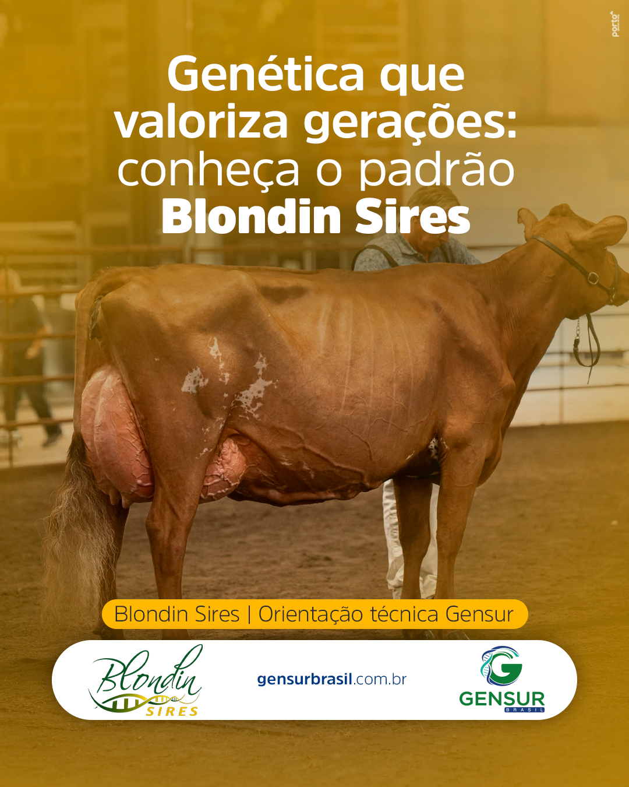
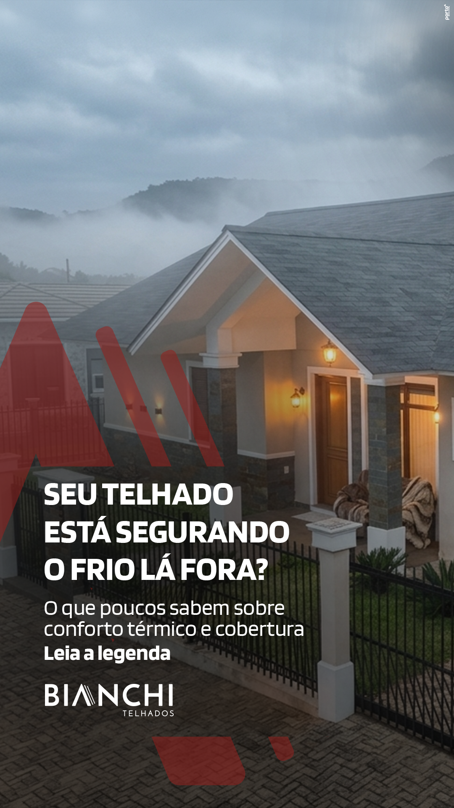
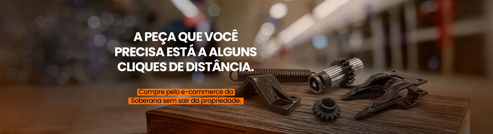
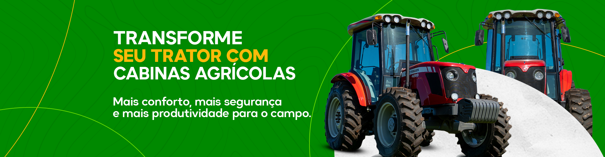

Ideias que viram posts, peças e vídeos.
Sou Maria Vitória, atuo como designer gráfica, com foco na criação de conteúdos visuais para redes sociais e experiência no desenvolvimento de campanhas de marketing e materiais gráficos digitais e impressos.
Ver trabalhosVamos conversar
Criatividade com base técnica
Sou Técnica em Manutenção e Suporte em Informática (IFRS Campus Sertão) e estudante de Redes de Computadores na UFSM.
Atuei como Designer Gráfica na Porto Agência de Marketing, criando artes para redes sociais, banners e materiais impressos, sempre a partir de briefings e respeitando prazos e a identidade visual de cada marca.
Também sou desenvolvedora web e atuo no marketing da CompactJR, a empresa júnior de TI da UFSM, com posts e campanhas. Gosto de comunicar bem, organizar equipes e apresentar projetos.
Áreas de atuação
Redes sociais
Feed, stories e carrosséis com identidade visual consistente e foco em engajamento.
Banners e web
Peças para sites, com dimensões corretas, arquivos otimizados e padrão visual do projeto.
Materiais impressos
Folders, cartões de visita, panfletos e cartazes com arquivos prontos para a gráfica.
Edição de vídeo
Vídeos curtos e conteúdos para redes, com ritmo, cortes e identidade da marca.
Trabalhos selecionados
Posts





Stories

STORY.jpg)



Vídeos
Banners




Materiais impressos
Experiência profissional
Designer Gráfica
- Artes para redes sociais (feed, stories e carrosséis) mantendo a identidade visual das marcas.
- Banners e peças gráficas para sites, com otimização de arquivos.
- Impressos: folders, cartões de visita, panfletos e cartazes, preparados para a gráfica.
- Trabalho a partir de briefings, com ajustes e entregas no prazo.
Marketing e desenvolvimento
- Posts e campanhas para divulgar os serviços e fortalecer a marca.
- Participação em projetos reais, como sites.
Design inclusivo e usabilidade
- Colaboração em design inclusivo e usabilidade do aplicativo, buscando uma experiência acessível.
Projetos e liderança
Shark Tank TMSI
2024 – Competidora: desenvolvimento de empresa fictícia, identidade visual, protótipo no Figma, planejamento financeiro.
2023 – Organizadora do evento.
Eventos do IFRS
Apresentadora na Feira do Conhecimento e no Seminário de Educação Profissional e Tecnológica (2024).
Projeto de Ensino
Bolsista em 2024: Projeto com foco na gestão e na evolução da Semana da Juventude, evento com grande importancia histórica no campus, com coordenação de equipes, contato com parceiros, divulgação e gestão de atividades.
Meu kit
Design
Marketing e conteúdo
Tecnologia
Formação e idiomas
Vamos criar algo juntos?
Santa Maria, RS • disponível para novos projetos
E-mail WhatsApp LinkedIn